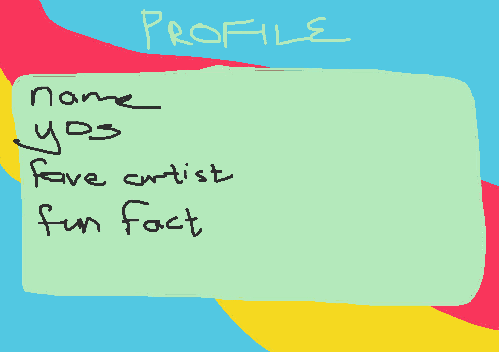
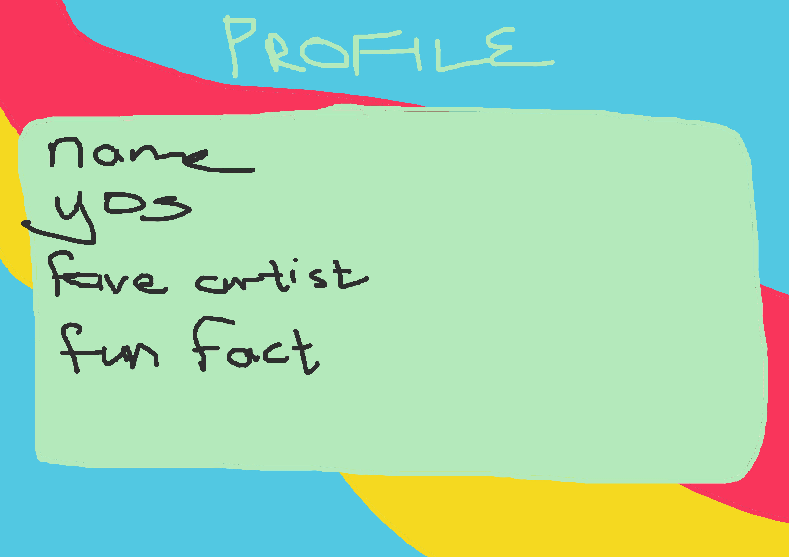
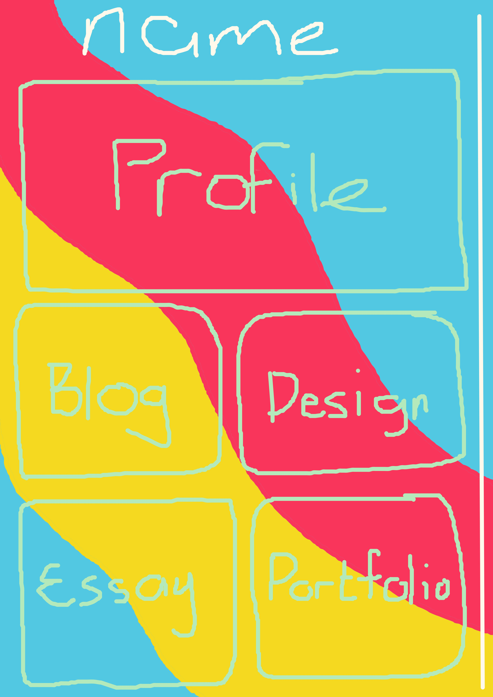

When reading Moulthrop (2003), it starts as listing the good things that
hypertext can do for people navigating the internet. It tells a quick
history linking back to the origin of the hypertext with Vannevar Bush
and the Memex in the 1940's, artificial intelligence researchers in the
1960's created the first hypertextual narrative to experiment with
interactive computing. Nelson then coined the term hypertext in the
1970's and had big ideas for it, which later on caused Engelbart to
partner with him to create a hypertext system called FRESS. It didn't
catch on until 1987, when Microsoft Press published Nelson's underground
works. Later, in the 90's, the hype around hypertext had died down for
the next big thing and Moulthrop (2003) states that "such changes of
fashion seem a regular hazard of the postmodern territory." He says that
people are waiting for a technological revolution, but that we do not
know what we are actually asking for, and are thus constantly
disappointed and move in circles.
After hypertext comes hyperreality. When this essay was published,
virtual reality was merely living on the internet, but now in today's
age, there are VR headsets that allows you to move more into a
hyper*reality*. Moulthrop (2003) explains it best, "Hyperreality, we are
told, is a site of collapse or implosion where referential or “grounded”
utterance becomes indistinguishable from the self-referential and the
imaginary." Later on, he states that we are at risk of falling into a
hopelessly abandoned simulation. Other academics, that Moulthrop has
used, have all said that postmodern modes of communication are capable
and will destabilize the current social hierarchy. We have already seen
that happen, the best example I can think of is in school where the more
followers you have on your socials indicate how popular you are in the
social hierarchy of school. Everyone directs people to follow them on
their other social media platforms via the hypertext in their bio. This
reconstruction of the social hierarchy is what Nelson referred to as
populitism - the combination of "populism” and “elite. The popular elite
will shift the attention to accommodate the demands of the moment, and
this is where the politics comes to stir the pot.
We have even seen how it could happen this year already when the US
government tried to ban TikTok, and the orange in charge 'played the
hero' when he was all for banning the platform just a few years ago, and
this all caused havoc on the platform for like 2 weeks (I'm not on
TikTok a lot, so I don't know how long people milked it). "Hypertext
does increase the agonistic element in reading." (Moulthrop, 2003) To
me, this reads as people using the hypertext are more concerned with
prior authority than if they were reading conventional writing. Mostly
because it does not dispel the vibe of the original intent. It is easier
to streamline the main ideas of a rabbithole, but it also gives way to
an easier spread of misinformation.
It is said at least twice in the reading that hypertext does not replace
books, but television as we still print lots and lots of books in
today's time. However, that is not to say that books will remain as
forests dwindle, paper costs rise, and maintenance for libraires will
become too much. Though us book lovers need not fear as "The chief
technological culprit in Kernan’s “death of literature” is not the smart
machine but the idiot box." (Moulthrop, 2003) Hypertext does return two
domains, namely literature and writing space. I interpret this return of
domains as websites like fanfiction.com and AO3 where people have spaces
on the internet to write their literature and share that literature with
others for free. When taken to its extreme, hypertext becomes
paradoxical like I have previously mentioned.
Reference: Moulthrop, S. (2003) ‘You Say You Want a Revolution?
Hypertext and the Laws of Media (1991)’.
Wireframe ideas:
 I really like the aesthetic of a retro funky vibe. Most of the
wireframes look like this one, but I will include them in case anyone is
interested.
I really like the aesthetic of a retro funky vibe. Most of the
wireframes look like this one, but I will include them in case anyone is
interested.


 

Then, for mobile, I wanted to keep the squiggly lines and colour scheme:



Reference material: This isn't everything as it will progress over time

One of the colour schemes I thought to use because I like the
colours. Link:
https://creativebooster.net/blogs/colors/retro-color-palettes

A pattern I found fun to use. Link:
https://www.shutterstock.com/image-vector/retrofuturism-poster-design-trend-retro-line-2271242913

More colour scheme options I like. Link:
https://img.freepik.com/free-vector/hand-drawn-nostalgic-90-s-covers_23-2149049463.jpg

MORE FUN SQUIGGLES. Link:
https://www.istockphoto.com/vector/1960s-hippie-style-wallpaper-design-trippy-retro-background-for-psychedelic-60s-70s-gm1395383184-450517629
I like the squiggles because they're fun and I feel like it represents
my mind and its constant state of thinking several things at once.
Back